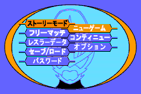

Toukon Heat (Japan)
EEPROM 64K gbakit Built-In 💾 MultiBoot
Cartridge Identity
- Game Code
A59J(FamilyA59)- Header Title
TOKON HEAT- Maker / Revision
G1/ rev0- ROM Size
- 8.0 MiB (8,388,608 B)
- Save Media
EEPROM 64K- SHA-256
37a83650f5f648d7fe12e56bdf0aba0020db7cead27e8e2126c3d672f08d2484
Screenshots


Link Cable & Multiplayer Communications
This title contains detected communication capabilities: 💾 MultiBoot.
Detailed protocol specifications, SIO registers, Joybus commands, and MultiBoot sequences are documented in the Link & Multiplayer Reference.
- Single-Cart MultiBoot
- Single-Cartridge MultiBoot (Download Play) client/server handler · Thumb SWI 0x25 (
0xDF25):0x3ea79e,0x40c414,0x48cc70,0x4a17b0
Battery Save Support in gbakit
Built-in definition (A59J)
gbakit save verify A59J save.sav
gbakit save decode A59J save.sav
gbakit save fix A59J damaged.sav -o repaired.savAsset Map (formatkit.asset-map.v1)
Download A59J-r0-37a83650f5f648d7.asset-map.json.gz (278,699 B (272.2 KiB)) Verified PASS · 13.62% coverage
| Metric | Bytes / Value | Entries |
|---|---|---|
| Identified | 596,752 B (582.8 KiB) (7.11%) | 2,690 |
| Mapped | 0 B (0.00%) | 0 |
| Opaque | 546,168 B (533.4 KiB) (6.51%) | 1 |
| Unknown | 7,245,688 B (6.91 MiB) (86.38%) | 2,668 |
| Total ROM Size | 8,388,608 B (8.00 MiB) | 5,359 |
| Coverage % | 13.62% | — |
| Entries w/ Code Refs | 2,702 / 5,359 (50.42%) | — |
Top Identified Formats: gfx.gba-palette (2,688 · 595,296 B (581.3 KiB)) · audio.m4a-song-table (1 · 1,264 B (1.2 KiB)) · gba.rom-header (1 · 192 B)
Largest unknown Extents (Headerless / Custom Asset Candidates)
| Offset | Size | Shannon Entropy | Code Refs |
|---|---|---|---|
0x0044E4A8 | 3,327,456 B (3.17 MiB) | 6.689 bits/B | 1 |
0x003711D8 | 618,084 B (603.6 KiB) | 6.847 bits/B | 0 |
0x00301530 | 457,864 B (447.1 KiB) | 6.698 bits/B | 0 |
0x002A3440 | 255,332 B (249.3 KiB) | 6.830 bits/B | 0 |
0x002E19C4 | 126,316 B (123.4 KiB) | 5.977 bits/B | 0 |
gzip -dk A59J-r0-37a83650f5f648d7.asset-map.json.gz && gbakit map verify rom.gba A59J-r0-37a83650f5f648d7.asset-map.json
gbakit assets export rom.gba --asset-map A59J-r0-37a83650f5f648d7.asset-map.json -o out/Text, Fonts & Scene Data
- Primary Text Encoding
- 16-bit / UTF-16LE text
- Font & VWF Indicators
- VWF Width Table 1bpp Font · BIOS SWIs: BitUnPack
0x10:0· LZ770x11/12:5· Huffman0x13:0· RLE0x14/15:7 - Scene & Packaging
13ROM pointer tables (≥32 entries,7≥200) ·6relativeu32TOCs ·433OAM metasprite hits
Hardware MMIO Subsystems
ppu_display0x8001dd0